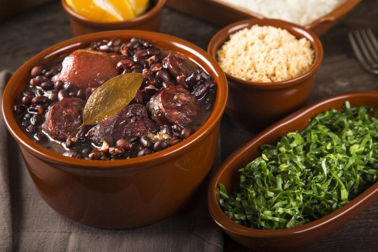
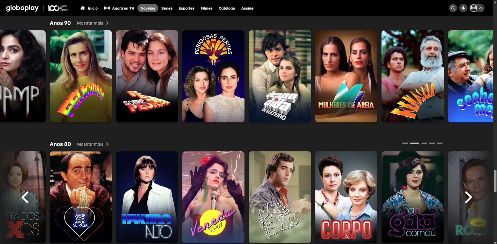

Minha comida favorita
Minha comida favorita é feijoada, principalmente a da minha mãe, que tem um sabor único e especial, feito com carinho e capaz de transformar qualquer refeição em um momento de alegria e conforto.
Meu hobby/passatempo favorito
Meu passatempo favorito é maratonar novelas. Adoro me perder nas histórias, acompanhar os personagens e viver cada emoção junto com a trama, tornando meus momentos de lazer ainda mais divertidos e envolventes.
Um lugar que quero conhecer
Grécia
Um lugar que eu sonho em conhecer é a Grécia, principalmente por sua riqueza histórica e cultural. Sempre fiquei fascinada pelos templos antigos, mitologia e tradições que atravessam séculos, além das paisagens deslumbrantes, como ilhas paradisíacas e cidades charmosas à beira do mar, que tornam a experiência única e inesquecível.
Novela favorita
A Gata Comeu
Em A Gata Comeu, um dos momentos mais marcantes é quando todo mundo fica preso na ilha. Ricos e pobres têm que conviver juntos, e a mistura de classes gera confusão, risadas e até solidariedade. Definitivamente, é um dos melhores momentos
Três personagens:
- Oscar
- Tetê
- Gugu
Personagens principais:
- Jô Penteado
- Fabio
- Album - Todos Os Cantos
- Música - Ei, Saudade
- Música - Leão
Cantor(a) ou Banda favorita
Marília Mendonça
História
Marília Mendonça (22 de julho de 1995 – 5 de novembro de 2021) foi uma cantora e compositora brasileira, conhecida como a “Rainha da Sofrência”. Nascida em Cristianópolis, Goiás, começou a compor ainda jovem e escreveu sucessos para artistas como Henrique & Juliano e Jorge & Mateus. Em 2015, lançou seu primeiro EP e alcançou grande destaque nacional em 2016 com o álbum Marília Mendonça – Ao Vivo, que incluía o hit “Infiel”. Com seu estilo sertanejo feminino, o chamado “feminejo”, conquistou fãs por suas letras sobre amor, dor e superação. Marília faleceu tragicamente aos 26 anos em um acidente aéreo, deixando um legado musical profundo que continua inspirando gerações.
Gosto da Marília Mendonça porque suas músicas falam de sentimentos reais de amor, dor e superação. Ela tinha uma voz poderosa e uma maneira única de se conectar com o público, fazendo a gente se emocionar e se identificar com cada letra. Além disso, ela representava força e autenticidade no sertanejo feminino, deixando sua marca para sempre.
3 músicas/albuns